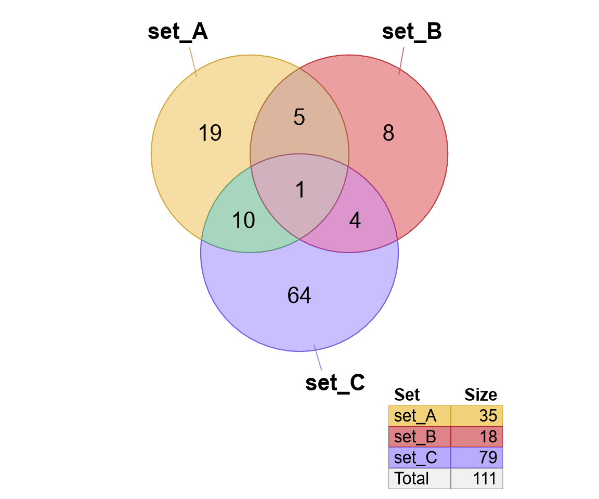
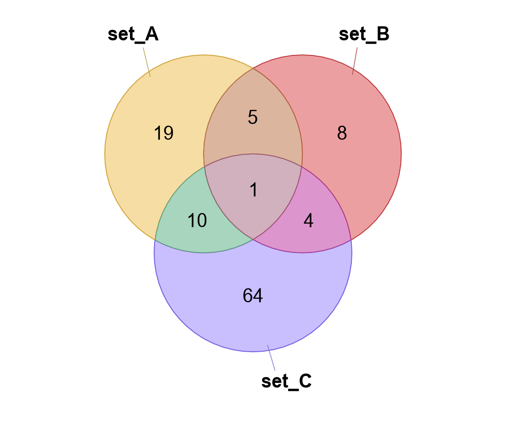
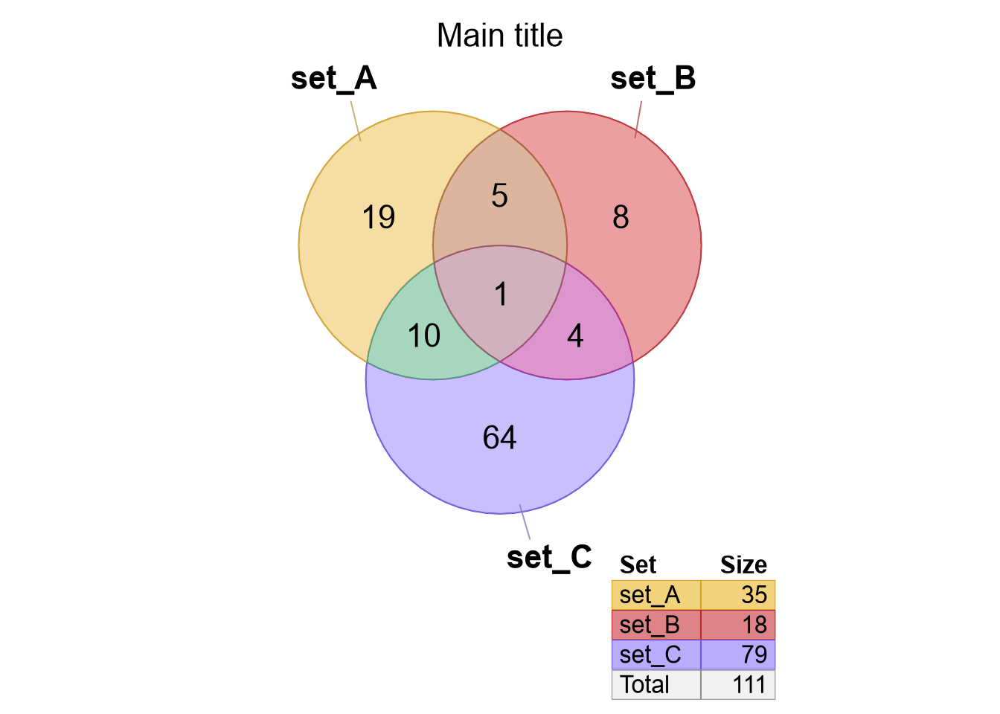
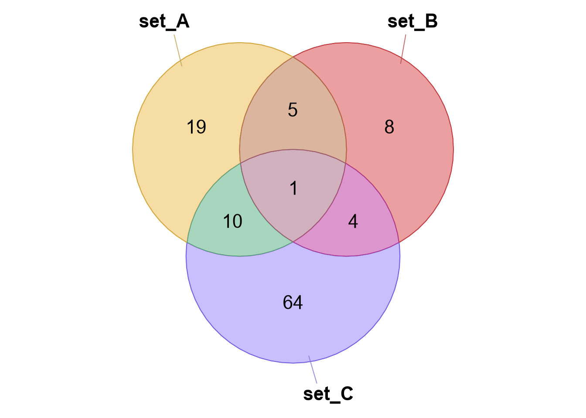
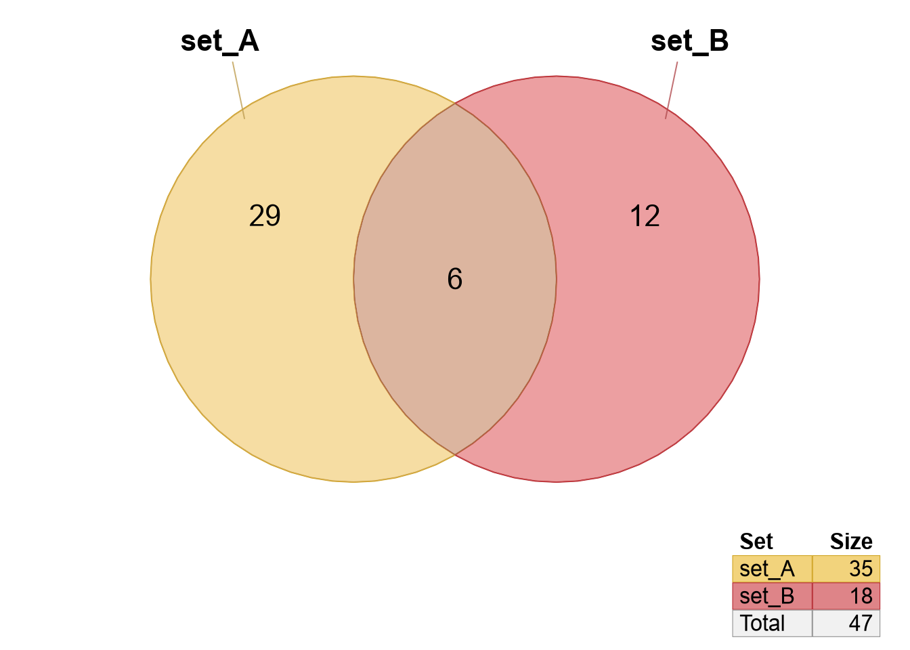
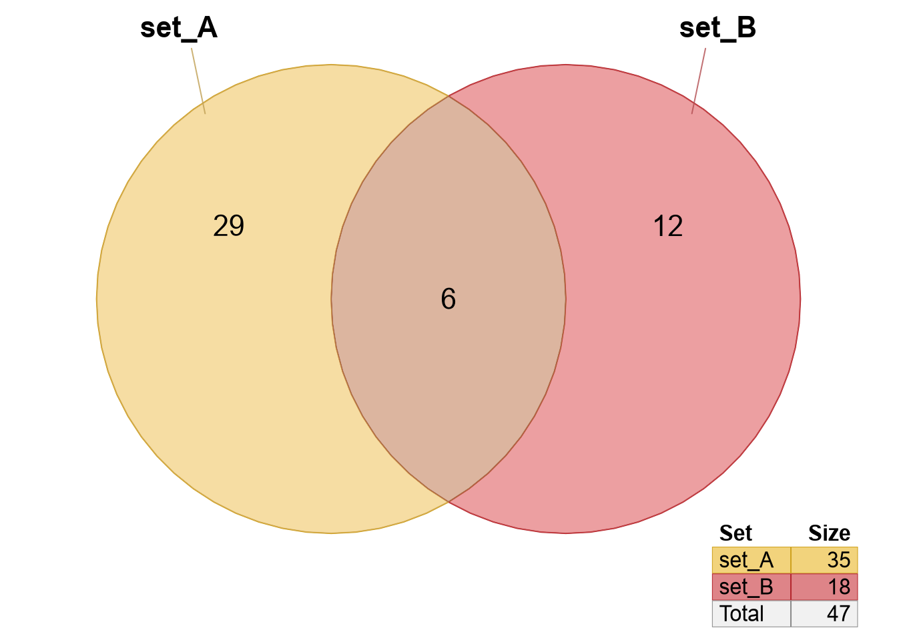

3.7 Figure Scale and Position
The Venndir figure is automatically sized to fit within the graphics device, and will re-adjust even when the figure is resized in RStudio or an R graphics window. However, it can be helpful to customize the scale and position further.
Common reasons to adjust scale and position:
- The outside labels extend beyond the page, usually when text labels contains multiple lines.
- The Venndir figure, or the outside labels overlap the legend.
- The figure could be resized to fit specific output dimensions.
Venndir uses the Venn circles and visible labels to create a square "bounding box". It is square to keep the aspect ratio 1:1, so circles remain circular. If the graphics device is not square, there will be blank space around the Venndir figure. Sometimes it helps to "zoom" the Venndir figure to fill the remaining space.
The argument expand_fraction adjusts the whitespace "buffer" around
the Venndir diagram.
expand_fractionabove0makes the whitespace larger, shrinking the Venn circles.expand_fractionbelow0makes the whitespace smaller, enlarging the Venn circles.- The font sizes are not adjusted.
The expand_fraction accepts four values, applied in clockwise order
from the bottom:
'bottom', 'left', 'top', 'right'.
Values are recycled to length=4, so expand_fraction=0.1 is applied
to all four sides.
When the legend is shown, the Venndir figure is shifted up 0.18.
setlist <- make_venn_test()
venndir(setlist)
venndir(setlist, draw_legend=FALSE)
venndir(setlist, main="Main title")
venndir(setlist, draw_legend=FALSE, expand_fraction=-0.1)
venndir(setlist, sets=1:2)
venndir(setlist, sets=1:2, expand_fraction=c(0.1, 0, 0, 0) - 0.1)





Figure 3.53: Venndir figure showing different values for 'expand_fraction'.
Tips:
The expand_fraction argument rules:
- When user-defined values are provided, or if they are stored in
the metadata of the
Venndirobject,expand_fractionis used without any adjustments. - When
expand_fractionis not defined, these default adjustments are applied:0.07is added to the top margin for each line in themaintitle.- If the legend is shown, using
draw_legend=TRUE, and the legend positionlegend_xincludes 'top' or 'bottom',0.2is added to the corresponding 'top' or 'bottom' margin. It will not adjust the 'left' or 'right' margin. - The top and bottom margins are reduced slightly.
- The
expand_fractionis stored in the returnedVenndirobject metadata when the plot is prepared, for example:- calling
plot()orrender_venndir(), or - calling
venndir()with the defaultdo_draw=TRUE.
- calling
3.7.1 Text Venn
Another convenient format for Venndir output is text Venn, intended for R console output. This output is convenient for analysis work on remote servers where interactive graphics are not available or not as convenient.
The core function textvenn() mimics the input and arguments
of venndir() with some key limitations:
- The input can only contain up to three sets.
- The display only supports Venn layout, not proportional.
- Output is a
data.frameand notVenndirobject.
The output follows the typical arrangement of text labels for
a Venn diagram, without the encompassing circular lines.
Colors and directional arrows are represented if the console
text output support these features, otherwise unicode=FALSE
will display '^' for "up", and 'v' for "down".
The basic 2-way textvenn() output follows:
A A&C C
24 11 68
The argument sets is described in Consistent Set Colors,
and is used to include a subset of sets while maintaining
consistent color assignment to each set.
The 3-way textvenn() output follows:
A&B
5
A B
19 8
A&B&C
1
A&C B&C
10 4
C
64
These examples show only the Venn overlaps without directionality. However, if given a signed setlist it will also include directional tabulations:
A&B ↑↑: 3
5 X: 2
A ↑: 10 B ↑: 3
19 ↓: 9 8 ↓: 5
A&B&C ↓↓↓: 1
1
A&C ↑↑: 5 B&C ↓↓: 3
10 ↓↓: 3 4 X: 1
X: 2
C ↑: 29
64 ↓: 35
The template argument described in Signed Label Placement is
also recognized. For example, template='tall' may improve the
layout especially when using overlap_type='each', an option
for tabulating directionality that is described in Overlap Type.
A&B
5
A ↑↑: 3 B
19 ↑↓: 1 8
↑: 10 ↓↑: 1 ↑: 3
↓: 9 ↓: 5
A&B&C
A&C 1 B&C
10 ↓↓↓: 1 4
↑↑: 5 ↓↑: 1
↓↑: 2 C ↓↓: 3
↓↓: 3 64
↑: 29
↓: 35
3.7.1.1 Text Venn Items
A useful byproduct of textvenn() is that it returns a data.frame,
invisibly, which means it can be assigned to a variable but otherwise
is not printed to the output device. The data.frame includes the
count summary for each overlap, in addition to the 'items' in
each set.
It is straightforward to use textvenn() to show the number of shared
and unique items, then use the 'items' column to answer the
most common next question: "What are those?"
The example below captures textvenn() output into a variable tv.
## A A&C C FALSE
## 24 11 68 FALSEThe items can be printed or used for subsequent analysis:
## $`A|1 0`
## [1] "item_014" "item_170" "item_043" "item_200" "item_091" "item_185"
## [7] "item_092" "item_137" "item_099" "item_072" "item_026" "item_007"
## [13] "item_198" "item_186" "item_164" "item_078" "item_081" "item_199"
## [19] "item_103" "item_117" "item_076" "item_109" "item_180" "item_023"
##
## $`C|0 1`
## [1] "item_041" "item_175" "item_060" "item_016" "item_116" "item_094"
## [7] "item_006" "item_086" "item_192" "item_039" "item_159" "item_034"
## [13] "item_004" "item_013" "item_069" "item_127" "item_052" "item_022"
## [19] "item_089" "item_160" "item_025" "item_035" "item_168" "item_112"
## [25] "item_030" "item_140" "item_189" "item_121" "item_110" "item_158"
## [31] "item_064" "item_142" "item_067" "item_151" "item_122" "item_079"
## [37] "item_085" "item_136" "item_051" "item_106" "item_098" "item_157"
## [43] "item_017" "item_046" "item_054" "item_174" "item_194" "item_161"
## [49] "item_024" "item_113" "item_107" "item_135" "item_102" "item_005"
## [55] "item_070" "item_146" "item_021" "item_055" "item_075" "item_083"
## [61] "item_150" "item_048" "item_077" "item_132" "item_056" "item_111"
## [67] "item_131" "item_068"
##
## $`A&C|1 1`
## [1] "item_195" "item_050" "item_118" "item_196" "item_153" "item_090"
## [7] "item_190" "item_143" "item_032" "item_182" "item_074"